pacman::p_load(ggraph,tidygraph,tidyverse,purrr,data.table,igraph,ggnetwork,htmlTable,arules,arulesViz,stringr)7 Module 6
7.1 Goals for this week.
Our current outline for the next out weeks looks like the below.
Introduction into R programming language and getting started with some descriptive statistics.
Understanding key terms; Exploratory analysis, Supervised vs Unsupervised problems, regression vs classification, prediction vs association.
A quick note on distributions - Supervised regression and classification problems using a generalized linear model framework. (Hypothesis testing)
Machine learning approach to Supervised learning
Methods of assessing model accuracy, feature selection and model tuning.
Unsupervised learning strategies2 (market basket analysis, network analysis)
Creating a machine learning pipeline
7.2 Recap from last module
Last module was a big one where we covered concepts relating to
Cross-validation techniques and model tuning to improve model performance
Calculate and interpret common performance metrics for classification and regression models
Feature selection algorithms (Lasso, PCA)
Some of this might have seem pretty complicated but the that key take aways were.
Where possible, split your data into a training and test data set. This test data set should be forgotten about until the end when you report the final model performance. There are some tricks we can utilize on the training data-set however, to help tune our models and limit over-fitting with the main technique being cross validation. Many algorithms we have discussed over the previous modules will actually perform cross validation under the hood when trying to tune for model performance.
One of those algorithms that utilize cross validation is the LASSO, which is an interesting algorithm in that it can also perform variable selection in situations where you have many predictors whilst maintaining relatively good predictive performance. We also showed how PCA can be useful in identifying variables that can be mapped together as “components”.
Finally, we talked about a lot of the nuance that is needed when interpreting binomial based model.
7.3 Goals for this week.
Introduce fundamentals of network analysis
Market basket analysis (association rules)
7.4 Load packages
7.5 Network analysis
Whilst network analysis has been around for a while, it has only recently been more utilized in performance analysis settings. This is namely due to the availability of transactional data, which network analysis is perfectly geared towards. Specifically, network analysis aims to both quantitatively and visually highlight how groups/players interact with each other.
Common measures that we can calculate from network analysis are:
Degree Centrality: This measure indicates how connected a player is within the network. In AFL terms, it represents the number of direct connections (e.g., passes) a player has with others. Example: If Player A passes to or receives passes from 5 different teammates during a match, their degree centrality would be 5.
Betweenness Centrality: This metric identifies players who act as “bridges” between different parts of the network. In AFL, these players might be crucial in linking defense to attack. Example: A midfielder who frequently receives the ball from defenders and then distributes it to forwards would have high betweenness centrality.
Closeness Centrality: This measure represents how quickly a player can interact with all other players in the network. In AFL, it could indicate players who are most efficient at distributing the ball across the entire team. Example: A player with high closeness centrality might be able to effectively pass the ball to any teammate on the field, regardless of their position.
Eigenvector Centrality: This metric takes into account not just how many connections a player has, but also the quality of those connections. In AFL, it could highlight players who connect with other highly influential players. Example: A forward who frequently receives passes from the team’s top midfielders would have high eigenvector centrality.
Clustering Coefficient: This measure indicates how tightly connected a player’s immediate network is. In AFL, it could reveal subgroups or cliques within the team. Example: A high clustering coefficient among defenders might indicate strong coordination and frequent passing between backline players.
Edge Weight: In network analysis, connections (edges) can have different strengths. In AFL, this could represent the frequency or success rate of passes between players. Example: The edge weight between two players who successfully complete 10 passes to each other would be higher than between players who only complete 2 passes.
Visual Representation: Network analysis in AFL can be visually represented through graphs where:
Nodes represent players
Edges represent passes or other interactions between players
The size of nodes might indicate a player’s centrality measure
The thickness of edges might represent the frequency or success of interactions
# Create sample data (you would replace this with real AFL data)
set.seed(123)
players <- c("Player1", "Player2", "Player3", "Player4", "Player5", "Player6")
edges <- data.frame(
from = sample(players, 20, replace = TRUE),
to = sample(players, 20, replace = TRUE)
# team = sample(c("Team_A","Team_B"),20,replace = T)
)
# Create the graph (now directed)
g <- graph_from_data_frame(edges, directed = TRUE)
# Calculate degree centrality
deg <- degree(g, mode = "total")
# Create a layout
#layout <- layout_with_fr(g)
# Create the plot
ggraph(g, layout = "stress")+#,layout = layout) +
geom_node_point(aes(size = deg), color = "skyblue") +
geom_edge_link(arrow = arrow(length = unit(4, 'mm')),
end_cap = circle(3, 'mm'),
start_cap = circle(3, 'mm'),
alpha = 0.4) +
geom_node_text(aes(label = name), repel = TRUE) +
scale_size_continuous(range = c(5, 15)) +
theme_void() +
labs(title = "AFL Player Network",
subtitle = "Node size represents degree centrality, arrows show pass direction",
size = "Degree")Warning: Using the `size` aesthetic in this geom was deprecated in ggplot2 3.4.0.
ℹ Please use `linewidth` in the `default_aes` field and elsewhere instead.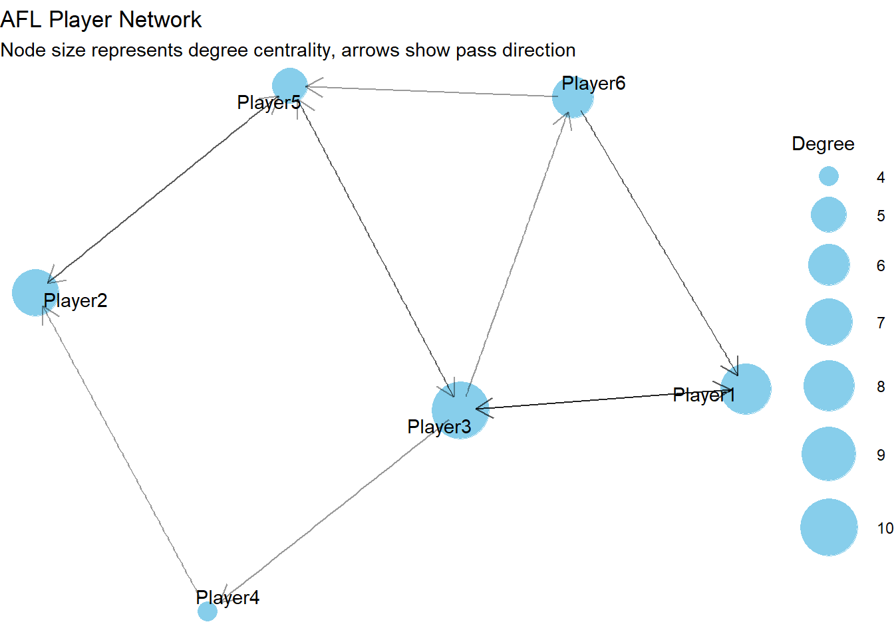
# Calculate all network measures
network_measures <- data.frame(
player = V(g)$name,
in_degree = degree(g, mode = "in"),
out_degree = degree(g, mode = "out"),
degree = degree(g, mode = "total"),
betweenness = betweenness(g, directed = TRUE),
closeness = closeness(g, mode = "all"),
eigenvector = eigen_centrality(g, directed = TRUE)$vector
# clustering = transitivity(g, type = "local", vids = V(g))
)
# Reshape the data for faceting
network_measures_long <- pivot_longer(network_measures,
cols = -player,
names_to = "measure",
values_to = "value")
ggplot(network_measures_long, aes(x = player, y = value)) +
geom_bar(stat = "identity", fill = "skyblue") +
facet_wrap(~ measure, scales = "free_y") +
theme_minimal() +
theme(axis.text.x = element_text(angle = 45, hjust = 1)) +
labs(title = "AFL Network Measures", x = "Player", y = "Value")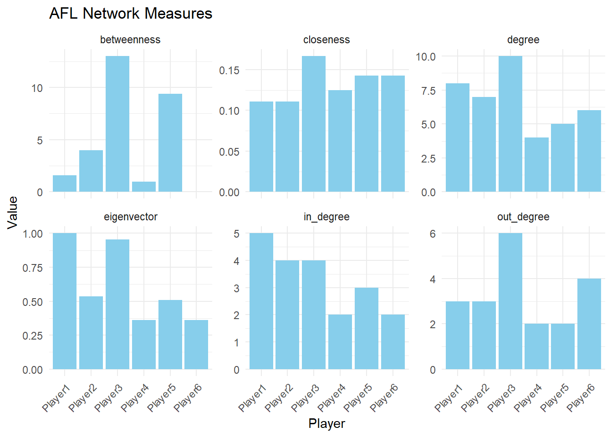
graph <- as_tbl_graph(highschool)
#graph
# Not specifying the layout - defaults to "auto"
ggraph(graph) +
geom_edge_link(aes(colour = factor(year))) +
geom_node_point()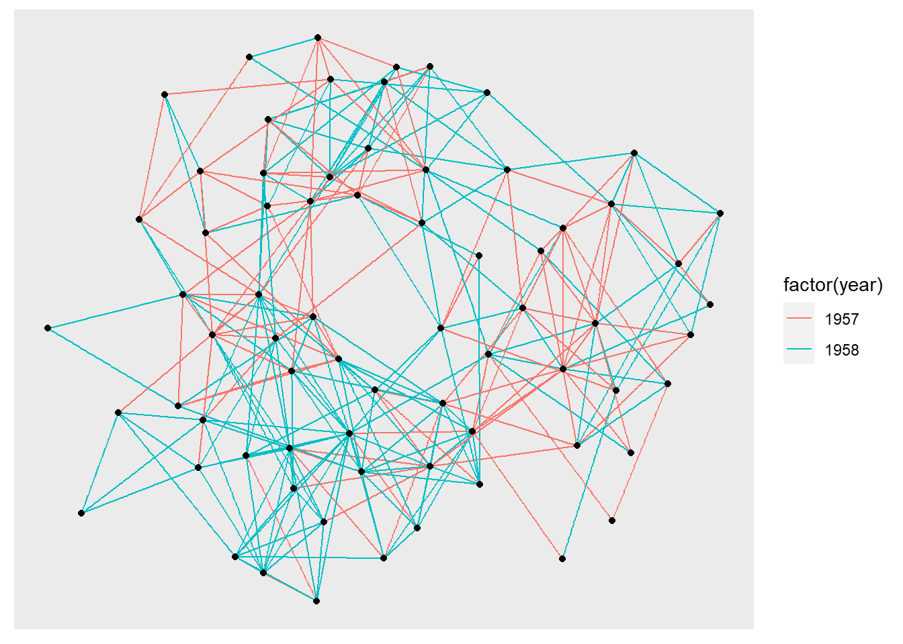
ggraph(graph, layout = 'linear', circular = TRUE) +
geom_edge_arc(aes(colour = factor(year))) +
coord_fixed()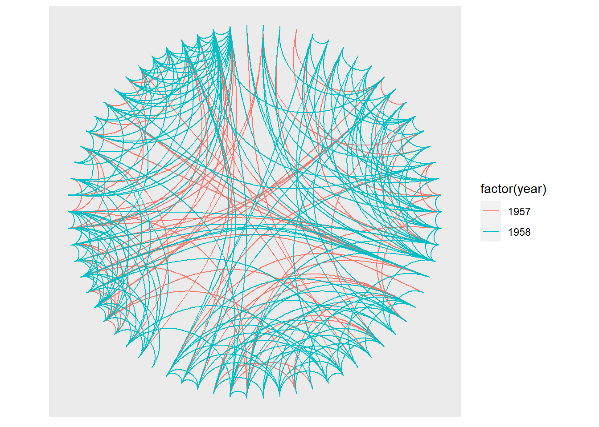
graph <- tbl_graph(flare$vertices, flare$edges)
ggraph(graph, 'circlepack', weight = size) +
geom_edge_link() +
geom_node_point(aes(colour = depth)) +
coord_fixed()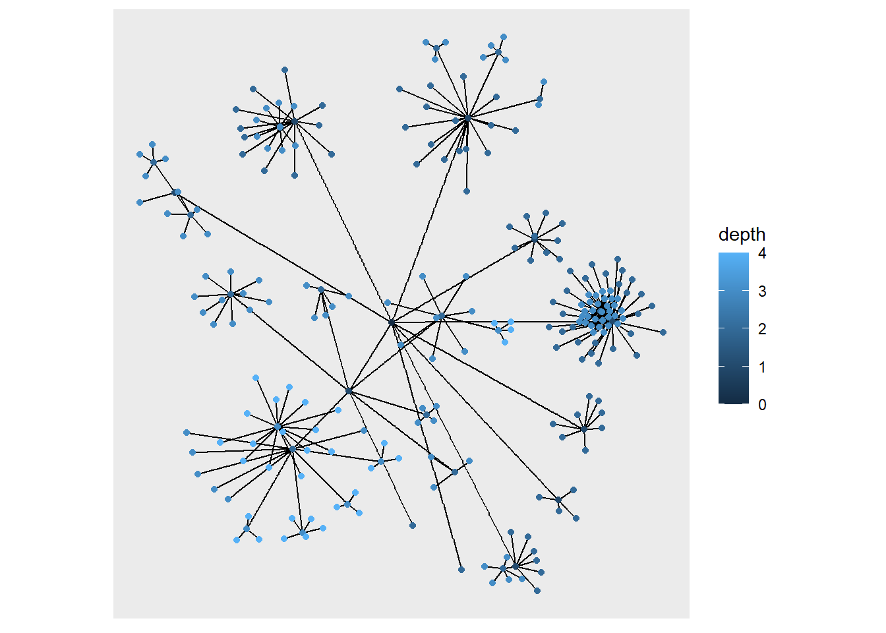
Now the examples are above just motivating examples to the points I was making above. Hopefully, you can see however, how by combing both the stats and visuals you could:
Identify key play makers and influential players
Discover effective passing combinations
Recognize potential weaknesses in the team’s structure
Compare playing styles across different matches or against different opponents
We will create a more specific AFL example now.
7.6 A quick note
Whilst, I have played around with network analysis a fair bit and conceptually understand most of it, I would not consider myself an expert in this space at all so some of the code below may not necessarily be the best way of doing things.
To make matters a little more complicated there are actually many different ways of doing network analysis in R with many great packages that have different strengths and weaknesses. Below are just a few.
https://ggplot2-book.org/networks
https://ggraph.data-imaginist.com/articles/Layouts.html
https://statnet.org/workshops/
https://cran.r-project.org/web/packages/ggnetwork/vignettes/ggnetwork.html
7.7 Simulating data (A superpower)
So as mentioned before having access to transnational data is relatively speaking something we only have had access to more recently. So for a long time whilst, I knew this may be a useful form of analysis as I had no data I didn’t really both fine tuning my skills. However, what I could have done to practice is make a fake data-set via simulation. Whilst, we haven’t discussed data simulation techniques over the previous modules in too much detail, I do strongly encourage you to slowly develop this skill. Luckily, from my experience LLM’s (ChatGPT, Claude etc) are really good at helping with this.
Now one caveat with quick and effective data simulation is you have an idea of what the goal is. For network analysis for example, I know from experience that most of the packages that we will use, require us to have a “From” column and a “To” column. All other columns can be additional information you think is important. However, as you will see later we do need to be a little clever with how we go about analyzing for many teams at once.
set.seed(123)
# set some baseline variables
players <- paste0("Player_",c(1:22))
disposal_methods <- c("Kick", "Handball")
Team <- c("Team_A","Team_B")
# create data.frame
df <- data.frame(
From = sample(players, 500, replace = TRUE),
To = sample(players, 500, replace = TRUE),
Team = sample(Team, 500, replace = TRUE,prob = c(0.55,0.45)),
How = sample(disposal_methods, 500, replace = TRUE))|>
mutate(Effective = ifelse(data.table::shift(Team,type = "lead")==Team,
"Yes","No"),
metres_gained = ifelse(Effective=="Yes",
round(rnorm(n(),20,5)),
round(rnorm(n(),3,5))),
chain_id = data.table::rleid(Team))|>
group_by(Team)|>
mutate(team.chain_id = data.table::rleid(Team))|>
ungroup()
# Remove self-connections
df <- df[df$From != df$To, ]Lets have a quick look at the average team chain_length
df %>%
group_by(Team,chain_id) %>%
summarise(
chain_length = n(),
team = first(Team)
) %>%
ungroup()|>
group_by(Team)|>
summarise(mu=mean(chain_length),
sd = sd(chain_length))# A tibble: 2 × 3
Team mu sd
<chr> <dbl> <dbl>
1 Team_A 1.92 1.31
2 Team_B 1.75 1.07These are quite similar which is mainly due to the fact that over 500 samples when I randomly sample from Team A and Team B these will be roughly similar even though I I gave higher probability to team a.
7.7.1 Step 2: Adjacency matrix
The first step in visualizing network data is a simple adjacency matrix.
adj_matrix <- df |>
group_by(Team, From, To) |>
# Below is an example where you dont need to use "ungroup()" after
summarise(Weight = n(), .groups = 'drop') |>
spread(To, Weight, fill = 0)
adj_matrix|>head(10)|>htmlTable()| Team | From | Player_1 | Player_10 | Player_11 | Player_12 | Player_13 | Player_14 | Player_15 | Player_16 | Player_17 | Player_18 | Player_19 | Player_2 | Player_20 | Player_21 | Player_22 | Player_3 | Player_4 | Player_5 | Player_6 | Player_7 | Player_8 | Player_9 | |
|---|---|---|---|---|---|---|---|---|---|---|---|---|---|---|---|---|---|---|---|---|---|---|---|---|
| 1 | Team_A | Player_1 | 0 | 0 | 0 | 1 | 0 | 0 | 0 | 1 | 2 | 1 | 1 | 0 | 0 | 0 | 1 | 0 | 0 | 0 | 0 | 1 | 1 | 1 |
| 2 | Team_A | Player_10 | 0 | 0 | 0 | 0 | 3 | 0 | 0 | 1 | 0 | 0 | 0 | 3 | 0 | 0 | 0 | 3 | 2 | 2 | 1 | 1 | 1 | 1 |
| 3 | Team_A | Player_11 | 0 | 0 | 0 | 0 | 0 | 2 | 0 | 0 | 0 | 0 | 0 | 0 | 1 | 1 | 0 | 1 | 2 | 1 | 1 | 1 | 1 | 0 |
| 4 | Team_A | Player_12 | 0 | 0 | 1 | 0 | 0 | 0 | 2 | 2 | 0 | 1 | 1 | 0 | 0 | 0 | 1 | 1 | 0 | 0 | 0 | 2 | 0 | 1 |
| 5 | Team_A | Player_13 | 1 | 0 | 0 | 0 | 0 | 0 | 1 | 0 | 0 | 0 | 0 | 0 | 0 | 1 | 1 | 1 | 0 | 0 | 0 | 1 | 0 | 2 |
| 6 | Team_A | Player_14 | 0 | 0 | 1 | 1 | 1 | 0 | 2 | 0 | 0 | 1 | 2 | 1 | 1 | 0 | 0 | 1 | 0 | 2 | 0 | 0 | 0 | 0 |
| 7 | Team_A | Player_15 | 0 | 0 | 0 | 0 | 0 | 1 | 0 | 0 | 0 | 2 | 0 | 0 | 0 | 0 | 0 | 0 | 1 | 0 | 0 | 2 | 1 | 1 |
| 8 | Team_A | Player_16 | 0 | 0 | 0 | 0 | 0 | 1 | 0 | 0 | 1 | 1 | 1 | 0 | 0 | 0 | 0 | 3 | 2 | 0 | 1 | 1 | 1 | 0 |
| 9 | Team_A | Player_17 | 1 | 2 | 1 | 0 | 0 | 1 | 1 | 0 | 0 | 0 | 2 | 0 | 1 | 0 | 0 | 2 | 0 | 1 | 0 | 0 | 1 | 0 |
| 10 | Team_A | Player_18 | 0 | 1 | 1 | 0 | 1 | 0 | 1 | 1 | 0 | 0 | 0 | 0 | 1 | 0 | 1 | 1 | 0 | 0 | 0 | 1 | 0 | 1 |
Effectively just counting the number of times a pair of players are counted together, might be easier to plot it.
adj_matrix_plt <- df |>
group_by(Team,Effective,From, To) |>
summarise(Weight = n(), .groups = 'drop')
p1 <- adj_matrix_plt|>
#filter(Team=="Team_A"&!
filter(!is.na(Effective))|>
mutate(revEff = ifelse(Effective=="No",-Weight,Weight))
ggplot(p1,aes(From,To,fill=revEff))+
geom_tile()+
scale_fill_viridis_c()+
theme_bw()+
theme(axis.text.x = element_text(angle = 90,
size=6,
vjust = -.5,
face = "bold"),
axis.text.y = element_text(size=5,face="bold"))+
facet_grid(Team~Effective)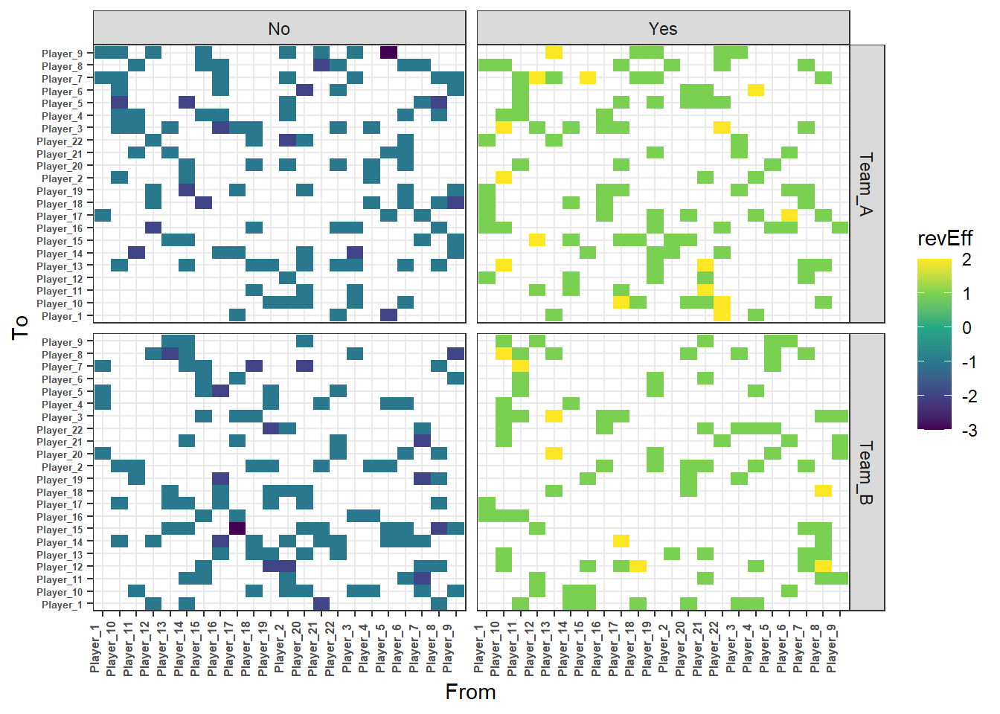
So this is a little easier to visualize relationships than the table before. This could be extended to look at types possessions etc.
7.7.2 Step 3: Prep data for network plots
edge_list <- df |>
group_by(Team,From,To,How) |>
summarise(
Weight = n(),
MostCommonHow = names(which.max(table(How))),
MostCommonHow_perc = round(max(prop.table(table(How))) * 100,1),
Effective_perc = round(mean(Effective == "Yes") * 100,1),
mean_MGE = round(mean(metres_gained[Effective=="Yes"]),1)) |>
ungroup()
edge_list|>
head(10)|>
htmlTable::htmlTable()| Team | From | To | How | Weight | MostCommonHow | MostCommonHow_perc | Effective_perc | mean_MGE | |
|---|---|---|---|---|---|---|---|---|---|
| 1 | Team_A | Player_1 | Player_12 | Handball | 1 | Handball | 100 | 100 | 17 |
| 2 | Team_A | Player_1 | Player_16 | Handball | 1 | Handball | 100 | 100 | 26 |
| 3 | Team_A | Player_1 | Player_17 | Handball | 1 | Handball | 100 | 100 | 15 |
| 4 | Team_A | Player_1 | Player_17 | Kick | 1 | Kick | 100 | 0 | |
| 5 | Team_A | Player_1 | Player_18 | Kick | 1 | Kick | 100 | 100 | 29 |
| 6 | Team_A | Player_1 | Player_19 | Handball | 1 | Handball | 100 | 100 | 18 |
| 7 | Team_A | Player_1 | Player_22 | Kick | 1 | Kick | 100 | 100 | 20 |
| 8 | Team_A | Player_1 | Player_7 | Handball | 1 | Handball | 100 | 0 | |
| 9 | Team_A | Player_1 | Player_8 | Kick | 1 | Kick | 100 | 100 | 19 |
| 10 | Team_A | Player_1 | Player_9 | Handball | 1 | Handball | 100 | 0 |
Okay we are going to look to create some network plots. Now there are many different ways to do this and I am sure there are better ways of doing this but this is best way I could come up which required the least amount of code and reduced the need for manual coding.
team_graphs <- edge_list |>
group_by(Team) |>
select(-Team)|>
group_map(~graph_from_data_frame(.x , directed = TRUE))Adding missing grouping variables: `Team`names(team_graphs) <- unique(edge_list$Team)
## create a function to apply network processing to each team
process_graph <- function(graph, team_name) {
node_degrees <- degree(graph)
ggnetwork(graph) %>%
mutate(
Team = team_name,
node_degree = node_degrees[name]
)
}
# Apply the function to each graph and combine results
combined_network_data <- team_graphs |>
imap_dfr(~process_graph(.x, .y))|>
mutate(impact = Weight*mean_MGE)Warning in format_fortify(model = model, nodes = nodes, weights = "none", :
duplicated edges detected
Warning in format_fortify(model = model, nodes = nodes, weights = "none", :
duplicated edges detected#combined_network_data
ggplot(combined_network_data, aes(x = x, y = y, xend = xend, yend = yend)) +
geom_edges(aes(color = MostCommonHow,
alpha = Effective_perc / 100,
size = Weight),
arrow = arrow(length = unit(0.3, "cm"), type = "closed"),
curvature = 0.2) +
geom_nodes(aes(size = node_degree)) +
geom_nodelabel(aes(label = name), size = 3) +
# scale_color_manual(values = color_palette) +
scale_size_continuous(range = c(0.5, 2.5)) +
scale_alpha_continuous(range = c(0.1, 1)) +
facet_wrap(~Team)+
theme_void() +
labs(title = "AFL Player Connections",
color = "Disposal Method",
alpha = "Effectiveness",
size = "Interaction Frequency") +
theme(legend.position = "right")Warning: Using `size` aesthetic for lines was deprecated in ggplot2 3.4.0.
ℹ Please use `linewidth` instead.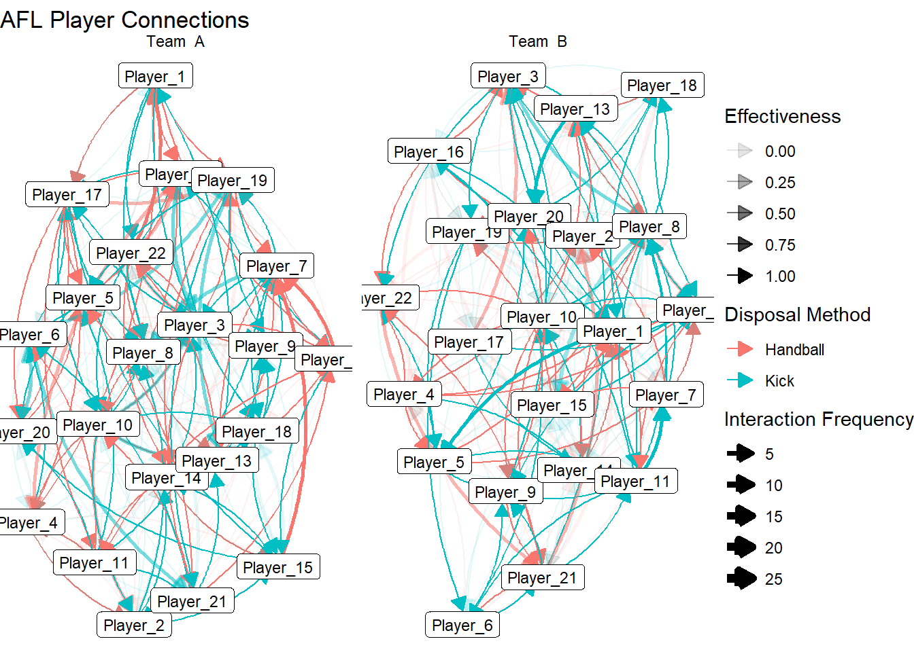
7.7.3 Player stats
Degree: Total number of connections (both in and out)
In-Degree: Number of incoming connections
Out-Degree: Number of outgoing connections
Betweenness Centrality: Measure of a player’s role in connecting other players
Closeness Centrality: Measure of how close a player is to all other players
Eigenvector Centrality: Measure of a player’s influence in the network
calculate_player_stats <- function(g, team_name) {
data.frame(
Player = V(g)$name,
Team = team_name,
Degree = igraph::degree(g),
In_Degree = igraph::degree(g, mode = "in"),
Out_Degree = igraph::degree(g, mode = "out"),
Betweenness = round(igraph::betweenness(g,directed = T),2),
Closeness = round(igraph::closeness(g),3),
Eigenvector = round(eigen_centrality(g,directed = T)$vector,2)
)
}
team_player_stats <-
imap_dfr(team_graphs, ~calculate_player_stats(.x, .y))|>
tibble::remove_rownames()
team_player_stats|>
head(10)|>
htmlTable::htmlTable()| Player | Team | Degree | In_Degree | Out_Degree | Betweenness | Closeness | Eigenvector | |
|---|---|---|---|---|---|---|---|---|
| 1 | Player_1 | Team_A | 17 | 7 | 10 | 8.72 | 0.029 | 0.47 |
| 2 | Player_10 | Team_A | 27 | 12 | 15 | 15.97 | 0.031 | 0.7 |
| 3 | Player_11 | Team_A | 19 | 8 | 11 | 9.4 | 0.03 | 0.47 |
| 4 | Player_12 | Team_A | 17 | 6 | 11 | 6.12 | 0.029 | 0.35 |
| 5 | Player_13 | Team_A | 22 | 14 | 8 | 11.67 | 0.029 | 0.9 |
| 6 | Player_14 | Team_A | 24 | 12 | 12 | 19.44 | 0.031 | 0.78 |
| 7 | Player_15 | Team_A | 17 | 11 | 6 | 7.31 | 0.027 | 0.71 |
| 8 | Player_16 | Team_A | 22 | 12 | 10 | 13.12 | 0.03 | 0.76 |
| 9 | Player_17 | Team_A | 23 | 11 | 12 | 15.53 | 0.031 | 0.68 |
| 10 | Player_18 | Team_A | 20 | 10 | 10 | 14.25 | 0.031 | 0.66 |
library(tidytext)
plyStatsPlt <- team_player_stats|>
group_by(Team)|>
mutate(Betweenness_rank = rank(-Betweenness, ties.method = "first")) |>
ungroup() %>%
mutate(Player_ordered =
tidytext::reorder_within(Player,Betweenness_rank,within=Team ))|>
pivot_longer(cols = c(Degree, In_Degree, Out_Degree, Betweenness, Closeness, Eigenvector),
names_to = "variable",
values_to = "value")
# Create the plot
ggplot(plyStatsPlt, aes(x = value, y = Player_ordered)) +
geom_point() +
tidytext::scale_y_reordered() +
facet_grid(Team ~ variable, scales = "free", space = "free_y") +
theme_bw() +
theme(axis.text = element_text(size = 6),
strip.text.y = element_text(angle = 0)) +
labs(x = "Value", y = "Player", title = "Player Network Statistics by Team")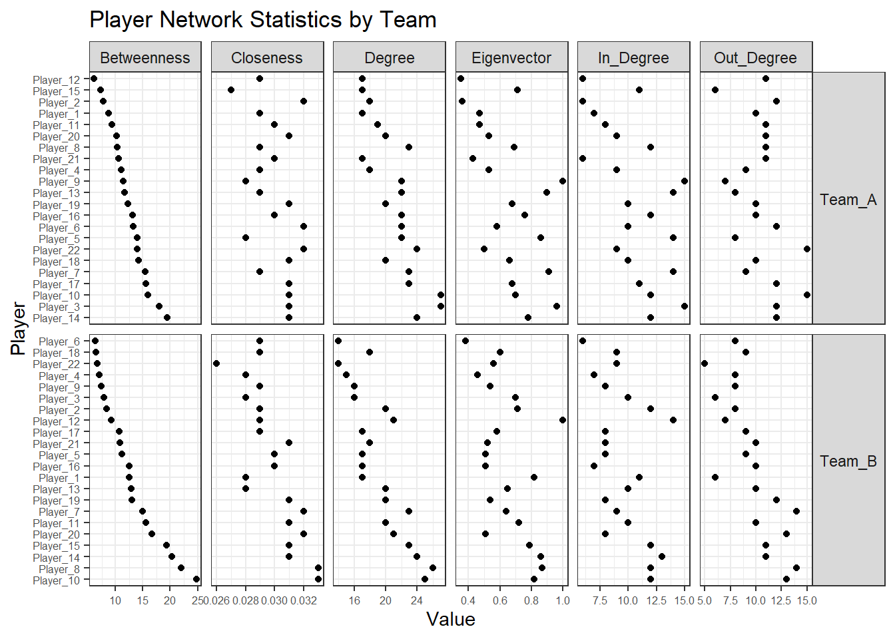
7.7.4 Team summary
ggplot(plyStatsPlt|>filter(!variable%in%c("In_Degree","Out_Degree")),aes(Team,value,col=Team))+
geom_boxplot()+
geom_jitter(width = .1)+
facet_wrap(~variable,scales = "free",nrow = 1)+
theme_test()+
theme(legend.position = "top")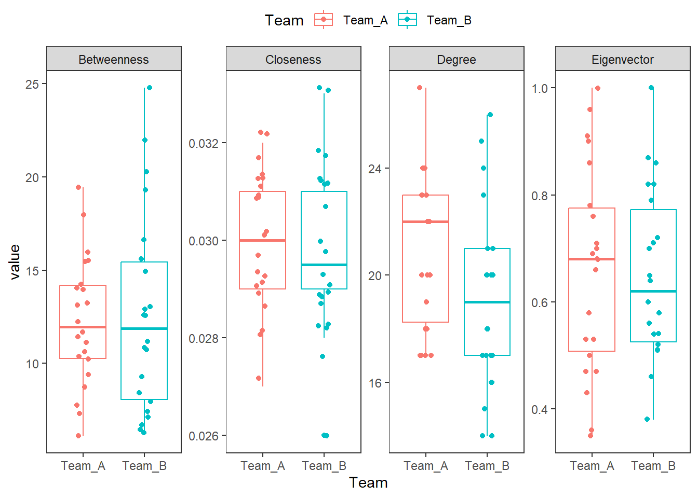
7.8 Quick Example using our data
7.8.1 Load data
urlfile="https://raw.githubusercontent.com/R2mu/GWS_DSPR/main/data/mod6_2.csv"
mod6_dat <- fread(urlfile)[,Effective:=ifelse(grepl("Ineffective",Type),"No","Yes")
][,Type_sml:= ifelse(grepl("Kick",Type),"Kick",
ifelse(grepl("Handball",Type),"Handball","Other"))
][!to=="",]
head(mod6_dat) Chain_ID Squad from to Type
1: 507 GWS GIANTS Lachie Ash Lachie Whitfield Handball Effective
2: 507 GWS GIANTS Lachie Whitfield Xavier O'Halloran Kick Effective Long
3: 509 GWS GIANTS Lachie Ash Lachie Whitfield Handball Effective
4: 509 GWS GIANTS Lachie Whitfield Toby Greene Kick Ineffective
5: 509 GWS GIANTS Toby Greene Jake Riccardi Handball Effective
6: 509 GWS GIANTS Jake Riccardi Xavier O'Halloran Handball Effective
chains.start chain.end Dist_to_Goal Effective Type_sml
1: Kick-in Turnover 150.6 Yes Handball
2: Kick-in Turnover 148.6 Yes Kick
3: Intercept Turnover 132.2 Yes Handball
4: Intercept Turnover 126.3 No Kick
5: Intercept Turnover 91.6 Yes Handball
6: Intercept Turnover 85.6 Yes Handball7.9 Some plots
adj_matrix <- mod6_dat |>
group_by(Squad, from, to) |>
summarise(Weight = n(), .groups = 'drop') |>
spread(to, Weight, fill = 0)
adj_matrix|>head(10)|>htmlTable::htmlTable()| Squad | from | Aaron Cadman | Aaron Francis | Braeden Campbell | Brent Daniels | Brodie Grundy | Caiden Cleary | Caleb Mitchell | Callan Ward | Callum M. Brown | Callum Mills | Chad Warner | Connor Idun | Conor Stone | Corey Warner | Dane Rampe | Darcy Jones | Errol Gulden | Finn Callaghan | Harry Cunningham | Harry Himmelberg | Harry Perryman | Harvey Thomas | Hayden McLean | Isaac Cumming | Isaac Heeney | Jack Buckley | Jacob Wehr | Jake Lloyd | Jake Riccardi | James Jordon | James Peatling | James Rowbottom | Jesse Hogan | Joe Fonti | Joel Amartey | Josh Kelly | Justin McInerney | Kieren Briggs | Lachie Ash | Lachie Whitfield | Leek Aleer | Lewis Melican | Logan McDonald | Luke Parker | Matt Roberts | Max Gruzewski | Nick Blakey | Nick Haynes | Oliver Florent | Robbie Fox | Ryan Angwin | Sam Taylor | Sam Wicks | Stephen Coniglio | Taylor Adams | Toby Bedford | Toby Greene | Toby McMullin | Tom Green | Tom McCartin | Tom Papley | Will Hayward | Xavier O'Halloran | |
|---|---|---|---|---|---|---|---|---|---|---|---|---|---|---|---|---|---|---|---|---|---|---|---|---|---|---|---|---|---|---|---|---|---|---|---|---|---|---|---|---|---|---|---|---|---|---|---|---|---|---|---|---|---|---|---|---|---|---|---|---|---|---|---|---|---|
| 1 | GWS GIANTS | Aaron Cadman | 0 | 0 | 0 | 7 | 0 | 0 | 0 | 1 | 0 | 0 | 0 | 1 | 0 | 0 | 0 | 2 | 0 | 1 | 0 | 1 | 0 | 7 | 0 | 0 | 0 | 0 | 1 | 0 | 3 | 0 | 2 | 0 | 2 | 0 | 0 | 3 | 0 | 4 | 1 | 2 | 0 | 0 | 0 | 0 | 0 | 0 | 0 | 0 | 0 | 0 | 1 | 0 | 0 | 4 | 0 | 1 | 6 | 1 | 1 | 0 | 0 | 0 | 2 |
| 2 | GWS GIANTS | Brent Daniels | 5 | 0 | 0 | 1 | 0 | 0 | 0 | 7 | 7 | 0 | 0 | 1 | 1 | 0 | 0 | 3 | 0 | 9 | 0 | 4 | 3 | 13 | 0 | 2 | 0 | 0 | 4 | 0 | 15 | 0 | 5 | 0 | 18 | 0 | 0 | 13 | 0 | 9 | 2 | 8 | 0 | 0 | 0 | 0 | 0 | 0 | 0 | 2 | 0 | 0 | 3 | 0 | 0 | 13 | 0 | 12 | 13 | 2 | 10 | 0 | 0 | 0 | 5 |
| 3 | GWS GIANTS | Callan Ward | 3 | 0 | 0 | 7 | 0 | 0 | 0 | 1 | 3 | 0 | 0 | 7 | 2 | 0 | 0 | 1 | 0 | 13 | 0 | 6 | 3 | 10 | 0 | 2 | 0 | 4 | 0 | 0 | 3 | 0 | 4 | 0 | 3 | 5 | 0 | 7 | 0 | 6 | 11 | 21 | 3 | 0 | 0 | 0 | 0 | 0 | 0 | 6 | 0 | 0 | 0 | 0 | 0 | 12 | 0 | 8 | 6 | 1 | 23 | 0 | 0 | 0 | 3 |
| 4 | GWS GIANTS | Callum M. Brown | 6 | 0 | 0 | 4 | 0 | 0 | 0 | 1 | 0 | 0 | 0 | 2 | 0 | 0 | 0 | 2 | 0 | 5 | 0 | 1 | 2 | 4 | 0 | 0 | 0 | 1 | 1 | 0 | 1 | 0 | 1 | 0 | 7 | 0 | 0 | 4 | 0 | 1 | 1 | 2 | 0 | 0 | 0 | 0 | 0 | 3 | 0 | 1 | 0 | 0 | 2 | 0 | 0 | 2 | 0 | 1 | 3 | 2 | 2 | 0 | 0 | 0 | 1 |
| 5 | GWS GIANTS | Connor Idun | 2 | 0 | 0 | 2 | 0 | 0 | 0 | 9 | 0 | 0 | 0 | 1 | 1 | 0 | 0 | 1 | 0 | 20 | 0 | 33 | 22 | 5 | 0 | 4 | 0 | 26 | 8 | 0 | 10 | 0 | 4 | 0 | 4 | 2 | 0 | 6 | 0 | 8 | 24 | 49 | 5 | 0 | 0 | 0 | 0 | 0 | 0 | 13 | 0 | 0 | 4 | 5 | 0 | 5 | 0 | 9 | 5 | 0 | 11 | 0 | 0 | 0 | 7 |
| 6 | GWS GIANTS | Conor Stone | 0 | 0 | 0 | 0 | 0 | 0 | 0 | 0 | 0 | 0 | 0 | 0 | 0 | 0 | 0 | 0 | 0 | 0 | 0 | 0 | 0 | 0 | 0 | 0 | 0 | 0 | 0 | 0 | 0 | 0 | 0 | 0 | 1 | 0 | 0 | 0 | 0 | 0 | 0 | 0 | 0 | 0 | 0 | 0 | 0 | 0 | 0 | 2 | 0 | 0 | 0 | 0 | 0 | 0 | 0 | 0 | 0 | 0 | 0 | 0 | 0 | 0 | 0 |
| 7 | GWS GIANTS | Darcy Jones | 1 | 0 | 0 | 5 | 0 | 0 | 0 | 2 | 0 | 0 | 0 | 0 | 0 | 0 | 0 | 1 | 0 | 3 | 0 | 1 | 0 | 4 | 0 | 1 | 0 | 0 | 2 | 0 | 4 | 0 | 3 | 0 | 8 | 2 | 0 | 1 | 0 | 2 | 1 | 3 | 0 | 0 | 0 | 0 | 0 | 0 | 0 | 0 | 0 | 0 | 0 | 0 | 0 | 1 | 0 | 5 | 6 | 2 | 4 | 0 | 0 | 0 | 3 |
| 8 | GWS GIANTS | Finn Callaghan | 4 | 0 | 0 | 11 | 0 | 0 | 0 | 18 | 7 | 0 | 0 | 14 | 0 | 0 | 0 | 5 | 0 | 1 | 0 | 7 | 8 | 18 | 0 | 2 | 0 | 6 | 8 | 0 | 12 | 0 | 12 | 0 | 16 | 5 | 0 | 10 | 0 | 6 | 11 | 22 | 3 | 0 | 0 | 0 | 0 | 0 | 0 | 2 | 0 | 0 | 2 | 3 | 0 | 11 | 0 | 18 | 10 | 7 | 25 | 0 | 0 | 0 | 9 |
| 9 | GWS GIANTS | Harry Himmelberg | 5 | 0 | 0 | 3 | 0 | 0 | 0 | 19 | 3 | 0 | 0 | 33 | 0 | 0 | 0 | 3 | 0 | 12 | 0 | 1 | 21 | 10 | 0 | 2 | 0 | 20 | 11 | 0 | 14 | 0 | 3 | 0 | 15 | 1 | 0 | 10 | 0 | 5 | 17 | 20 | 4 | 0 | 0 | 0 | 0 | 0 | 0 | 7 | 0 | 0 | 0 | 5 | 0 | 9 | 0 | 3 | 5 | 5 | 15 | 0 | 0 | 0 | 6 |
| 10 | GWS GIANTS | Harry Perryman | 5 | 0 | 0 | 2 | 0 | 0 | 0 | 7 | 8 | 0 | 0 | 11 | 1 | 0 | 0 | 0 | 0 | 18 | 0 | 11 | 2 | 3 | 0 | 2 | 0 | 4 | 4 | 0 | 6 | 0 | 5 | 0 | 6 | 2 | 0 | 5 | 0 | 5 | 11 | 25 | 2 | 0 | 0 | 0 | 0 | 0 | 0 | 3 | 0 | 0 | 1 | 1 | 0 | 7 | 0 | 8 | 9 | 1 | 15 | 0 | 0 | 0 | 3 |
p1 <- mod6_dat |>
group_by(Squad, from, to) |>
summarise(Weight = n(), .groups = 'drop') #|>
#spread(to, Weight, fill = 0)
ggplot(p1,aes(from,to,fill=Weight))+
geom_tile()+
scale_fill_viridis_c()+
theme_bw()+
theme(axis.text.x = element_text(angle = 90,
size=6,
vjust =.25,
hjust=1,
face = "bold"),
axis.text.y = element_text(size=5,face="bold"))+
facet_wrap(~Squad,scales = "free")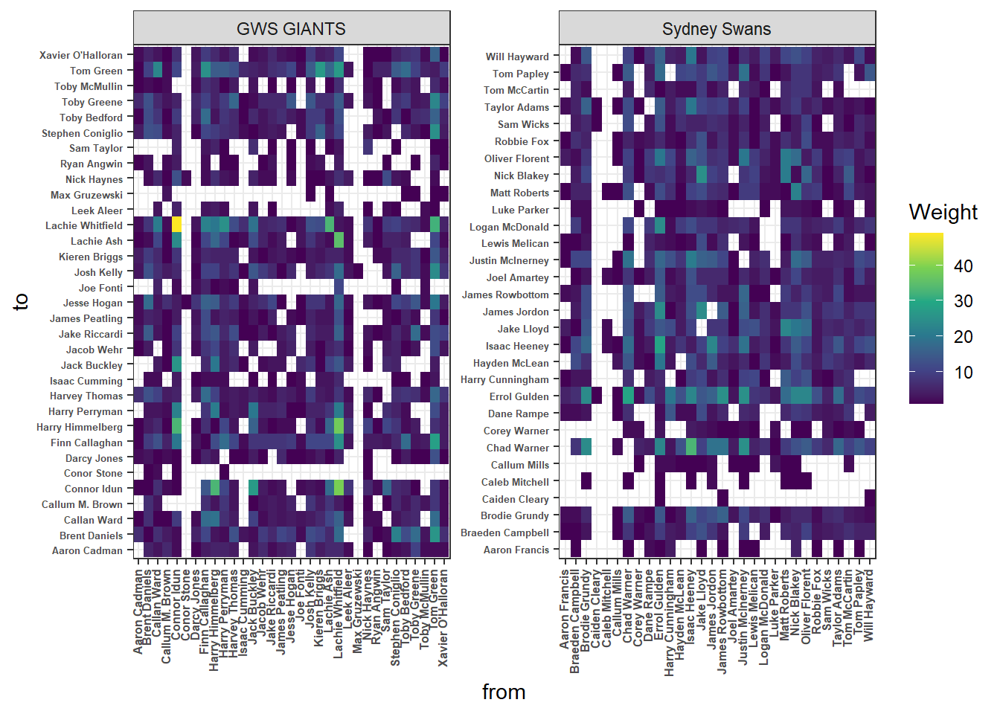
You could break this down even further if you wanted to see how players were interacting.
p2 <- mod6_dat |>
group_by(Squad,Type_sml,Effective,from, to) |>
summarise(Weight = n(), .groups = 'drop')
ggplot(p2|>filter(Squad=="GWS GIANTS"&!Type_sml=="Other"),
aes(from,to,fill=Weight))+
geom_tile()+
scale_fill_viridis_c()+
theme_bw()+
theme(axis.text.x = element_text(angle = 90,
size=6,
vjust =.25,
hjust=1,
face = "bold"),
axis.text.y = element_text(size=5,face="bold"))+
facet_grid(Type_sml~Effective,scales = "free")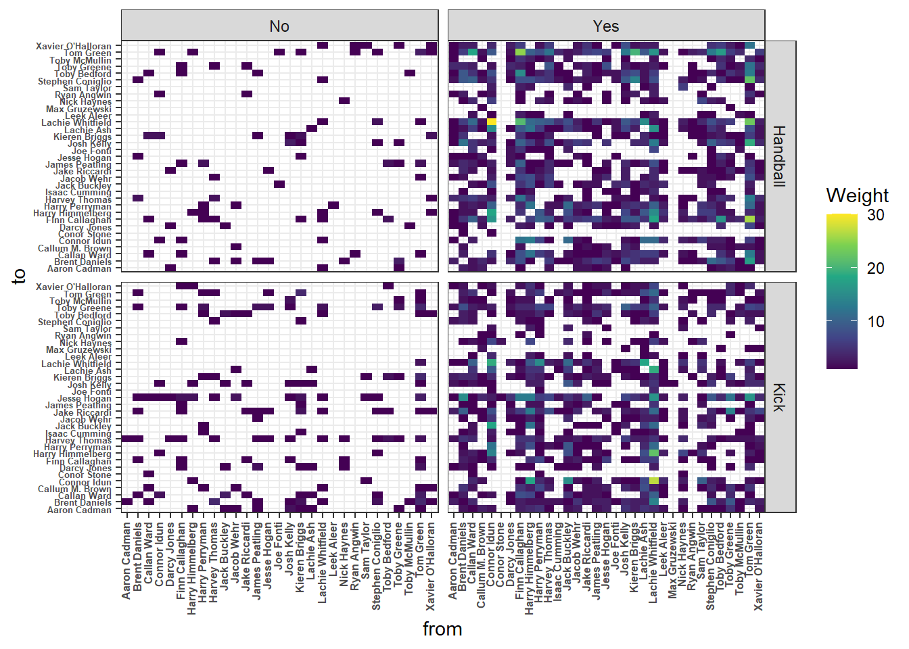
edge_list_2 <- mod6_dat |>
filter(!Type_sml=="Other")|>
group_by(Squad,from,to) |>
summarise(
Weight = n(),
MostCommonHow = names(which.max(table(Type_sml))),
MostCommonHow_perc = round(max(prop.table(table(Type_sml))) * 100,1),
Effective_perc = round(mean(Effective == "Yes") * 100,1))|>
#mean_MGE = round(mean(metres_gained[Effective=="Yes"]),1)) |>
ungroup()
pltly1 <-ggplot(edge_list_2|>filter(Weight>5),aes(from,to,size=Weight,col=MostCommonHow,alpha=Effective_perc))+
geom_point()+
theme_bw()+
theme(axis.text.x = element_text(angle = 90,
size=6,
vjust =.25,
hjust=1,
face = "bold"),
axis.text.y = element_text(size=5,face="bold"))
pltly1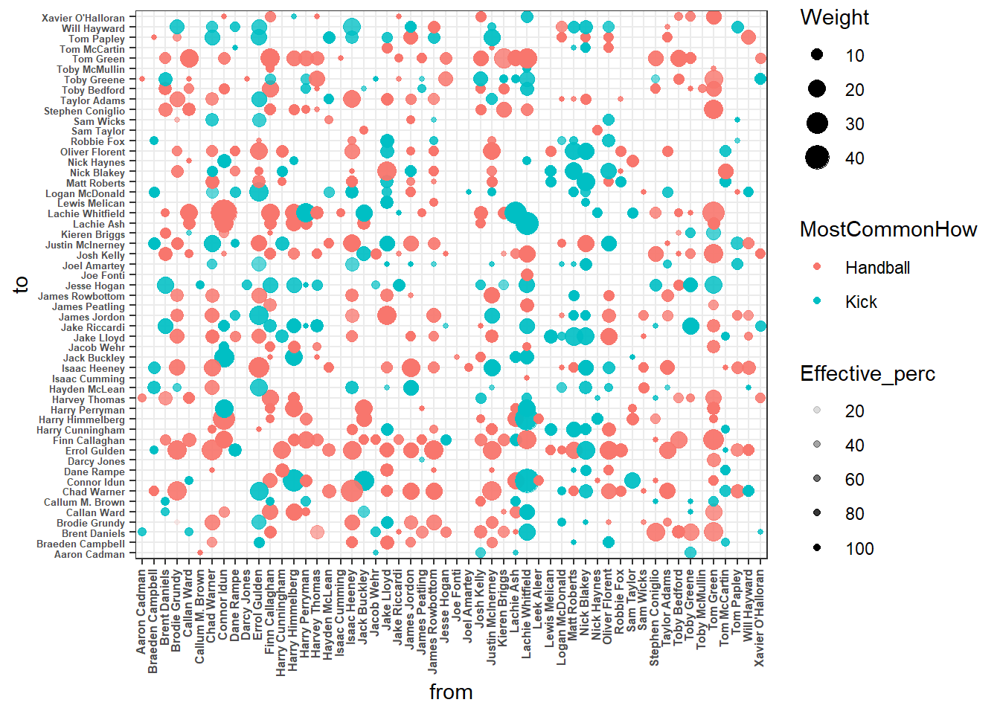
I did look to make the above interactive using the plotly package but I was having trouble when trying to render. Lets make a network, as hopefully you can see it makes visualizing these things a little easier
team_graphs <- edge_list_2 |>
group_by(Squad) |>
select(-Squad)|>
group_map(~graph_from_data_frame(.x , directed = TRUE))
names(team_graphs) <- unique(edge_list_2$Squad)
## create a function to apply network processing to each team
process_graph <- function(graph, team_name) {
node_degrees <- degree(graph)
ggnetwork(graph) %>%
mutate(
Team = team_name,
node_degree = node_degrees[name]
)
}
# Apply the function to each graph and combine results
combined_network_data <- team_graphs |>
imap_dfr(~process_graph(.x, .y))#|>
#mutate(impact = Weight*mean_MGE)
#combined_network_data
GWS_plt =combined_network_data|>
dplyr::filter(Weight>25)
ggplot(GWS_plt, aes(x = x, y = y, xend = xend, yend = yend)) +
geom_edges(aes(color = MostCommonHow,
alpha = Effective_perc / 100,
size = Weight),
arrow = arrow(length = unit(0.3, "cm"), type = "closed"),
curvature = 0.2) +
geom_nodes(aes(size = node_degree)) +
geom_nodelabel(aes(label = name), size = 3) +
# scale_color_manual(values = color_palette) +
scale_size_continuous(range = c(0.5, 2.5)) +
scale_alpha_continuous(range = c(0.1, 1)) +
scale_x_continuous(expand = expansion(mult = 0.2)) +
scale_y_continuous(expand = expansion(mult = 0.2)) +
facet_wrap(~Team,nrow=2,strip.position = "right",scales = "free")+
theme_light() +
labs(title = "AFL Player Connections",
color = "Disposal Method",
alpha = "Effectiveness",
size = "Interaction Frequency") +
theme(legend.position = "right",axis.text = element_blank(),
panel.grid = element_blank())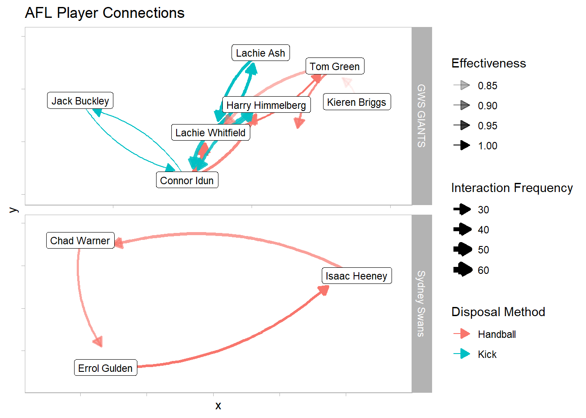
Lets explore some different ways of ploting the above. The below may seem a little complicated which is fair enough, it is! As I mentioned earlier there most likely is an easier way of doing the below.
# Function to filter graph based on edge weight
filter_graph_by_weight <- function(graph, min_weight) {
# Get edge weights
weights <- E(graph)$Weight
# Create a logical vector for edges to keep
keep_edges <- weights >= min_weight
# Subset the graph
filtered_graph <- subgraph.edges(graph, which(keep_edges), delete.vertices = FALSE)
return(filtered_graph)
}
# Filter the graph (adjust min_weight as needed)
GWS_circ <- filter_graph_by_weight(team_graphs$`GWS GIANTS`, min_weight = 15)
SYD_circ <- filter_graph_by_weight(team_graphs$`Sydney Swans`, min_weight = 15)
# Create the plot
gws_g1 =ggraph(GWS_circ , layout = 'linear', circular = TRUE) +
geom_edge_arc(aes(colour = factor(MostCommonHow),
alpha = Effective_perc / 100,
width = Weight)) +
geom_node_label(aes(label = name), size = 2) +
scale_edge_width(range = c(0.1, 2)) +
scale_edge_alpha(range = c(0.1, 1)) +
theme_void() +
labs(title = "GWS GIANTS Network",
edge_colour = "Most Common How",
edge_width = "Weight",
edge_alpha = "Effectiveness %")
syd_g1 =ggraph(SYD_circ , layout = 'linear', circular = TRUE) +
geom_edge_arc(aes(colour = factor(MostCommonHow),
alpha = Effective_perc / 100,
width = Weight)) +
geom_node_label(aes(label = name), size = 2) +
scale_edge_width(range = c(0.1, 2)) +
scale_edge_alpha(range = c(0.1, 1)) +
theme_void() +
labs(title = "Syd Swans Network",
edge_colour = "Most Common How",
edge_width = "Weight",
edge_alpha = "Effectiveness %")
ggpubr::ggarrange(gws_g1,syd_g1,common.legend = T)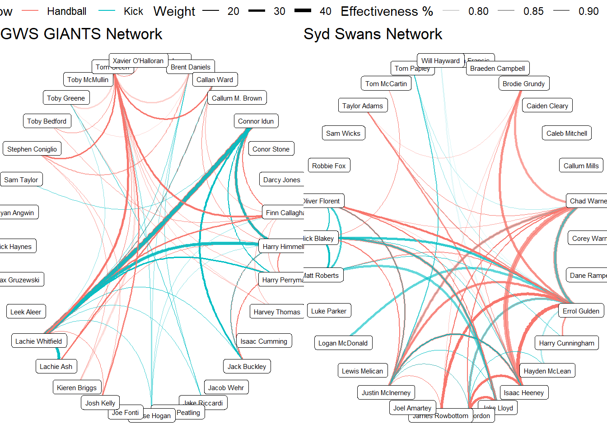
# As earlier
player_network_stats = imap_dfr(team_graphs, ~calculate_player_stats(.x, .y))|>
tibble::remove_rownames()
plyStatsPlt <- player_network_stats|>
group_by(Team)|>
mutate(Betweenness_rank = rank(-Betweenness, ties.method = "first")) |>
ungroup() |>
# add a column to allow for ordering via facets
mutate(Player_ordered =
tidytext::reorder_within(Player,Betweenness_rank,within=Team ))|>
pivot_longer(cols = c(Degree, In_Degree, Out_Degree, Betweenness, Closeness, Eigenvector),
names_to = "variable",
values_to = "value")
# Create the plot
ggplot(plyStatsPlt|>filter(Team=="GWS GIANTS"), aes(x = value, y = Player_ordered)) +
geom_point() +
# This a special package required for the plots below
tidytext::scale_y_reordered() +
facet_grid(Team ~ variable, scales = "free", space = "free_y") +
theme_bw() +
theme(axis.text = element_text(size = 6),
strip.text.y = element_text(angle = 0)) +
labs(x = "Value", y = "Player", title = "Player Network Statistics by Team")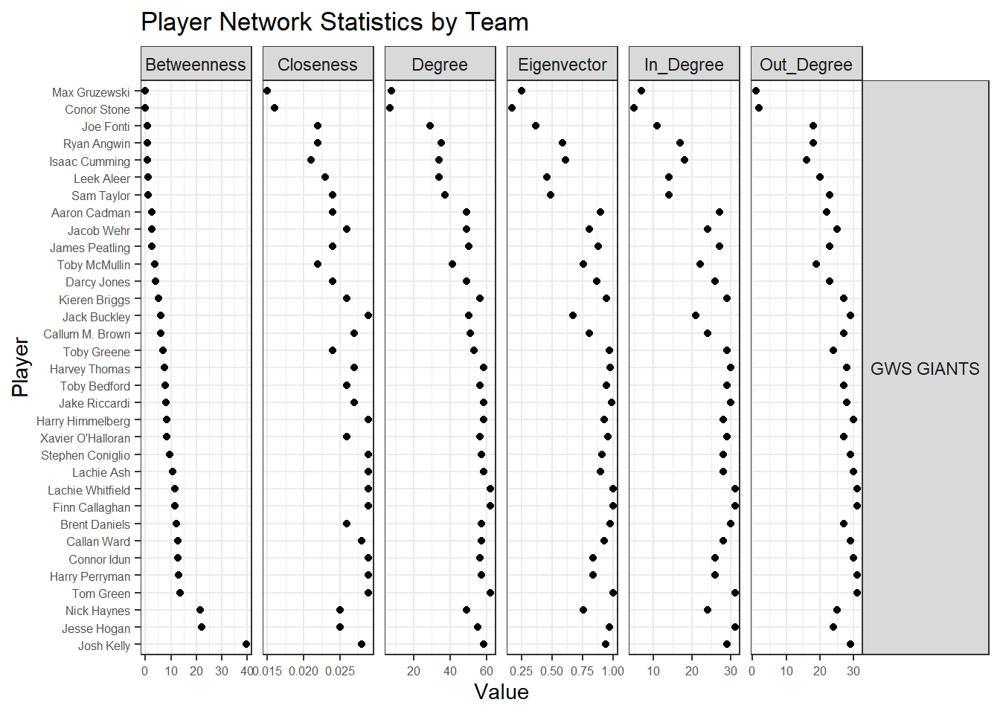
7.9.1 Important note
The above is just for example, as I haven’t normalized for games. e.g. players with more games will likely have higher numbers. It may also be worth checking, can you think of any reason why players like Nick Haynes and Jess Hogan may show high Betweenness? Kelly and Haynes make sense Hogan is a little more interesting into him being a key linking player.
ggplot(plyStatsPlt|>filter(!variable%in%c("In_Degree","Out_Degree")),aes(Team,value,col=Team))+
geom_boxplot()+
geom_jitter(width = .1)+
facet_wrap(~variable,scales = "free",nrow = 1)+
theme_test()+
theme(legend.position = "top")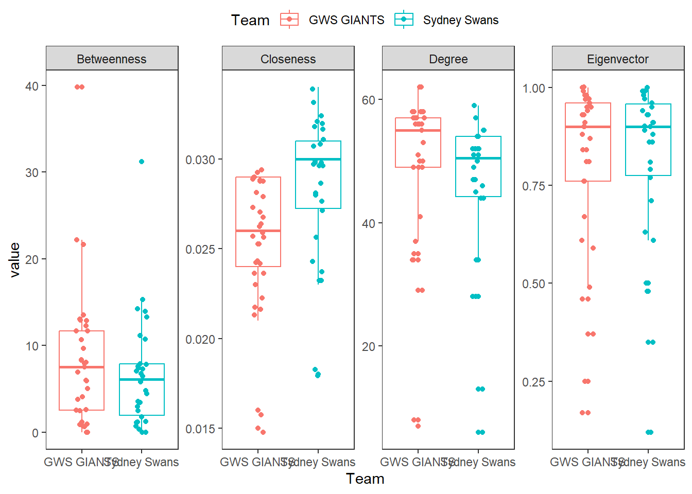
7.10 Association Rules/Market basket analysis
Association rules mining and market basket analysis are data mining techniques used to uncover relationships between items in large data-sets. Originally developed for retail and e-commerce to analyze customer purchasing patterns, these methods can be adapted to work with chains in sport.
The most common algorithm used for this analysis is called Apriori. It works by:
1. Identifying frequent item-sets (groups of items that often appear together)
2. Generating rules from these item sets
3. Evaluating the strength of these rules using metrics like support, confidence, and lift
Metrics
- Support: The frequency of an item-set in the data-set
- Confidence: The likelihood that an item Y is purchased when item X is purchased
- Lift: A measure of how much more likely item Y is purchased when item X is purchased, compared to Y’s usual purchase rate
*These will make sense more in a bit
In a sports context we can use this technique to:
1. Identify patterns in player interactions (e.g., which players tend to pass to each other)
2. Discover play sequences that frequently lead to scoring opportunities
3. Analyze defensive formations that effectively counter certain offensive strategies
4. Uncover unexpected relationships between different aspects of the game
First we turn the chains into transactions.
# Step 1: Prepare the data
Team = "GWS GIANTS"
transactions_df <- mod6_dat |>
mutate(last_name =word(from, -1),
pass = paste(last_name,Type_sml,sep = "_")) |>
filter(Squad==Team)|>
group_by(Chain_ID, Squad) |>
# the below is important as we are effectively nesting all of the chains into one transaction using the list argument
summarise(passes = list(pass), .groups = "drop")
transactions <- as(transactions_df$passes, "transactions")
inspect(head(transactions,10)) items
[1] {Ash_Handball,
Whitfield_Kick}
[2] {Ash_Handball,
Greene_Handball,
O'Halloran_Handball,
Riccardi_Handball,
Whitfield_Kick}
[3] {Bedford_Handball,
Green_Handball}
[4] {Ash_Kick,
Taylor_Kick}
[5] {Green_Handball}
[6] {Ash_Kick,
Hogan_Kick}
[7] {Ward_Handball}
[8] {Greene_Kick,
Himmelberg_Kick,
Idun_Handball,
Kelly_Kick}
[9] {Greene_Handball,
Kelly_Handball}
[10] {Taylor_Handball,
Whitfield_Handball} Time to run the apriori algorithm and print the results.
rules <- apriori(transactions,
parameter = list(support = 0.01, conf = 0.2),
control = list(verbose = FALSE))
top_rules <- head(rules, n = 10, by = "lift")
inspect(top_rules)|>
data.frame()|>
mutate_if(is.numeric, round,2)|>htmlTable::htmlTable() lhs rhs support
[1] {Buckley_Kick, Himmelberg_Kick} => {Idun_Kick} 0.01016746
[2] {Himmelberg_Kick, Idun_Kick} => {Buckley_Kick} 0.01016746
[3] {Buckley_Kick, Idun_Kick} => {Himmelberg_Kick} 0.01016746
[4] {Buckley_Kick} => {Idun_Kick} 0.02332536
[5] {Idun_Kick} => {Buckley_Kick} 0.02332536
[6] {Idun_Kick} => {Himmelberg_Kick} 0.02033493
[7] {Himmelberg_Kick} => {Idun_Kick} 0.02033493
[8] {Bedford_Handball} => {Callaghan_Handball} 0.02272727
[9] {Perryman_Kick} => {Idun_Kick} 0.01196172
[10] {Idun_Kick} => {Whitfield_Kick} 0.02511962
confidence coverage lift count
[1] 0.8095238 0.01255981 10.657668 17
[2] 0.5000000 0.02033493 7.531532 17
[3] 0.4358974 0.02332536 5.061254 17
[4] 0.3513514 0.06638756 4.625665 39
[5] 0.3070866 0.07595694 4.625665 39
[6] 0.2677165 0.07595694 3.108486 34
[7] 0.2361111 0.08612440 3.108486 34
[8] 0.3247863 0.06997608 2.784835 38
[9] 0.2020202 0.05921053 2.659668 20
[10] 0.3307087 0.07595694 2.479573 42 | lhs | Var.2 | rhs | support | confidence | coverage | lift | count | |
|---|---|---|---|---|---|---|---|---|
| [1] | {Buckley_Kick, Himmelberg_Kick} | => | {Idun_Kick} | 0.01 | 0.81 | 0.01 | 10.66 | 17 |
| [2] | {Himmelberg_Kick, Idun_Kick} | => | {Buckley_Kick} | 0.01 | 0.5 | 0.02 | 7.53 | 17 |
| [3] | {Buckley_Kick, Idun_Kick} | => | {Himmelberg_Kick} | 0.01 | 0.44 | 0.02 | 5.06 | 17 |
| [4] | {Buckley_Kick} | => | {Idun_Kick} | 0.02 | 0.35 | 0.07 | 4.63 | 39 |
| [5] | {Idun_Kick} | => | {Buckley_Kick} | 0.02 | 0.31 | 0.08 | 4.63 | 39 |
| [6] | {Idun_Kick} | => | {Himmelberg_Kick} | 0.02 | 0.27 | 0.08 | 3.11 | 34 |
| [7] | {Himmelberg_Kick} | => | {Idun_Kick} | 0.02 | 0.24 | 0.09 | 3.11 | 34 |
| [8] | {Bedford_Handball} | => | {Callaghan_Handball} | 0.02 | 0.32 | 0.07 | 2.78 | 38 |
| [9] | {Perryman_Kick} | => | {Idun_Kick} | 0.01 | 0.2 | 0.06 | 2.66 | 20 |
| [10] | {Idun_Kick} | => | {Whitfield_Kick} | 0.03 | 0.33 | 0.08 | 2.48 | 42 |
Okay so how do we interpret this.
Rule Interpretation: The rule {Buckley_Kick, Himmelberg_Kick} => {Idun_Kick} means that when Buckley and Himmelberg both kick the ball in a possession chain, it’s often followed by Idun kicking the ball.
Support (0.01): This rule appears in 1% of all possession chains analyzed. It’s a measure of how frequently this combination occurs in the dataset.
Confidence (0.81): When Buckley and Himmelberg both kick in a chain, there’s an 81% chance that Idun will kick next. This high confidence suggests a strong association.
Coverage (0.01): This indicates that the antecedent (Buckley_Kick and Himmelberg_Kick together) occurs in 1% of all chains, regardless of what follows.
Lift (10.66): This is perhaps the most interesting metric. A lift of 10.66 means that Idun is 10.66 times more likely to kick after Buckley and Himmelberg have kicked than he would be in any random situation. This high lift suggests a very strong association that’s unlikely to be random.
Count (17): This specific combination occurred 17 times in your dataset.
In summary, this rule suggests a strong tactical pattern where Buckley and Himmelberg kicking in sequence often leads to Idun getting the next kick. This could indicate a set play or a preferred passing route that the team uses frequently. The high lift and confidence make this a particularly noteworthy pattern that coaches might want to examine further, either to reinforce if it’s successful or to vary if it’s becoming too predictable
You may notice I set the supp to 0.01 and conf to 0.3. This helps limits the amount of rules the algo might find. There is not perfect number to set these, sometimes a bit of trial and error is needed. For example with Sydney I had to set the conf to 0.2.
7.10.1 Adding additional measures.
Lets say you also wanted to incorporate information regarding metres gained per transaction. You could do so with below structure, with the caveat that the way I have formulated metres gained is not ideal.
In simpler terms we are moving from:
Standard Apriori: “When Player A passes to Player B, they often pass to Player C next”.
to
Our weclat approach: “The pass sequence from Player A to Player B to Player C is associated with X% of the team’s total metres gained.”
The key difference with our weclat approach is: We’re not just looking at what pass combinations happen frequently, but we’re weighing each occurrence by how many metres were gained. This means we can identify pass sequences that contribute significantly to the team’s overall territory gain, even if they don’t occur as often as other combinations.
For example:
A common but less effective sequence might show up in standard analysis but not be as prominent in our approach.
A less frequent but highly effective sequence might be highlighted by our approach, even if it’s not among the most common patterns.
This method helps us find “high-impact” pass combinations - those that, when they occur, tend to result in substantial gains in field position. It balances frequency with effectiveness, giving us insight into which passing patterns are most valuable for moving the ball down the field.
In AFL terms, this could help identify key play sequences that, while maybe not the team’s go-to moves, are particularly effective when used and might be worth incorporating more often into the team’s strategy.
library(arules)
library(arulesViz)
library(dplyr)
# Assuming your data frame is called 'df' with columns: Chain_ID, from, to, metres_gained
Team = "GWS GIANTS"
# Prepare the data
transactions_df <- mod6_dat |>
mutate(last_name = word(from, -1),
pass = paste(last_name, Type_sml, sep = "_")) |>
filter(Squad == Team)|>
group_by(Chain_ID) |>
mutate(first = dplyr::first(Dist_to_Goal),
last = dplyr::last(Dist_to_Goal),
MGE = first - last)|>
summarise(
passes = list(pass),
total_metre = abs(sum(MGE, na.rm = TRUE))
)
trans <- transactions(transactions_df$passes)Warning in asMethod(object): removing duplicated items in transactionstransactionInfo(trans) <- data.frame(weight=transactions_df$total_metre)
#inspect(head(trans, n = 5))
# Mine weighted frequent itemsets
weighted_itemsets <- weclat(trans,
parameter = list(support = 0.01,confidence=0.3),
control = list(verbose = FALSE))
# Inspect top itemsets by support
inspect(sort(weighted_itemsets, by = "support", decreasing = TRUE)[1:10]) items support
[1] {Whitfield_Kick} 0.2558028
[2] {Callaghan_Handball} 0.2223960
[3] {Green_Handball} 0.2075784
[4] {Whitfield_Handball} 0.2031912
[5] {Idun_Kick} 0.1951103
[6] {Himmelberg_Kick} 0.1835050
[7] {Bedford_Handball} 0.1691756
[8] {Ward_Handball} 0.1478155
[9] {Idun_Handball} 0.1448124
[10] {Perryman_Kick} 0.1432190# Create association rules
rules <- ruleInduction(weighted_itemsets, confidence = 0.5)
# Sort rules by lift and inspect top rules
top_rules <- sort(rules, by = "lift", decreasing = TRUE)[1:10]
inspect(top_rules) lhs rhs support confidence lift
[1] {Idun_Kick,
Thomas_Kick,
Ward_Kick} => {Cumming_Kick} 0.01137386 0.9539128 25.88307
[2] {Thomas_Kick,
Ward_Kick} => {Cumming_Kick} 0.01137386 0.9209367 24.98831
[3] {Green_Kick,
Ward_Handball} => {Peatling_Handball} 0.01117692 0.8458933 24.77556
[4] {Idun_Kick,
Ward_Kick,
Whitfield_Handball} => {Cumming_Kick} 0.01406497 0.7056486 19.14677
[5] {Bedford_Handball,
Daniels_Kick,
Idun_Kick} => {Jones_Kick} 0.01057507 0.6510238 18.03494
[6] {Buckley_Kick,
Callaghan_Kick,
Himmelberg_Kick,
Idun_Kick,
Whitfield_Kick} => {Peatling_Kick} 0.01563984 1.0000000 17.53682
[7] {Buckley_Kick,
Callaghan_Kick,
Himmelberg_Kick,
Whitfield_Kick} => {Peatling_Kick} 0.01563984 1.0000000 17.53682
[8] {Buckley_Kick,
Callaghan_Kick,
Idun_Kick,
Whitfield_Kick} => {Peatling_Kick} 0.01563984 1.0000000 17.53682
[9] {Buckley_Kick,
Callaghan_Kick,
Whitfield_Kick} => {Peatling_Kick} 0.01563984 1.0000000 17.53682
[10] {Callaghan_Kick,
Himmelberg_Kick,
Idun_Kick,
Whitfield_Kick} => {Peatling_Kick} 0.01563984 1.0000000 17.53682This below line of code won;t work within my quarto document but can make some cool interactive plots.
# Visualize top rules
#plot(top_rules, method = "graph", engine = "htmlwidget")7.11 Network Analysis vs. Market Basket Analysis in AFL
7.11.1 Similarities
Both analyze patterns and relationships in player interactions
Can provide insights into team strategies and player roles
Use data on passes between players
7.11.2 Differences
7.11.3 Network Analysis
Focuses on overall structure of player interactions
Considers the entire team as a connected system
Identifies key players based on their position in the network
7.11.3.1 Market Basket Analysis
Focuses on specific sequences of passes
Looks at combinations of events rather than overall structure
Identifies frequent and effective pass combinations
7.11.4 Strengths
7.11.4.1 Network Analysis
Provides a big-picture view of team dynamics
Identifies central players and potential weak links
Useful for understanding overall team structure and strategy
7.11.4.2 Market Basket Analysis
Uncovers specific, actionable pass sequences
Can incorporate effectiveness measures (e.g., metres gained)
Good at finding unexpected combinations that lead to success
7.11.5 Weaknesses
7.11.5.1 Network Analysis
May overlook specific, effective play sequences
Can be complex to interpret for non-technical audiences
Doesn’t easily incorporate effectiveness measures
7.11.5.2 Market Basket Analysis
Doesn’t provide an overall view of team structure
May miss important players who don’t appear in frequent combinations
Can generate a large number of rules, making interpretation challenging